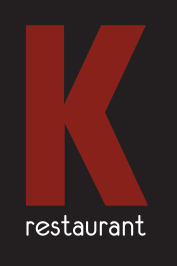
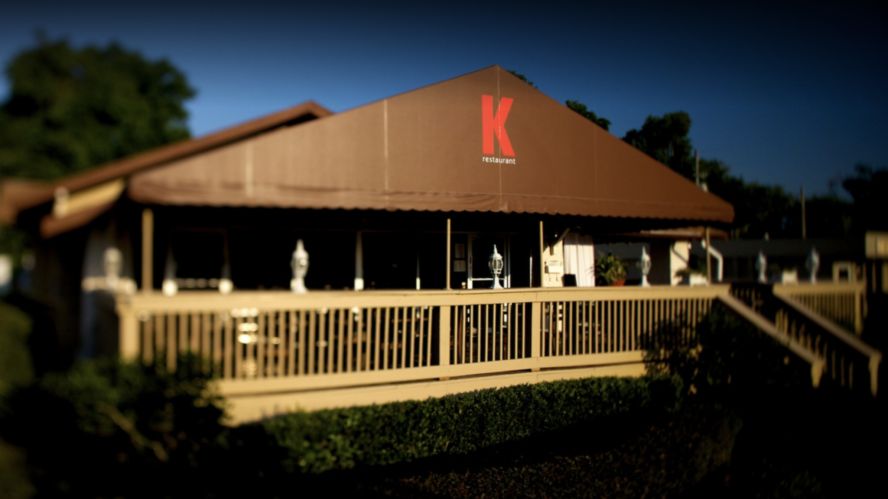

Home
K Restaurant & Wine Bar is a locally owned and operated. The menu changes daily according to the availability of fresh ingredients from locally sourced Central Florida farms and artisans. The K menu is New-American cuisine with an Italian flare. We pride ourselves on our quality food and service. K Restaurant also accommodates private parties and events.